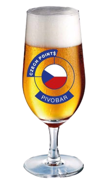
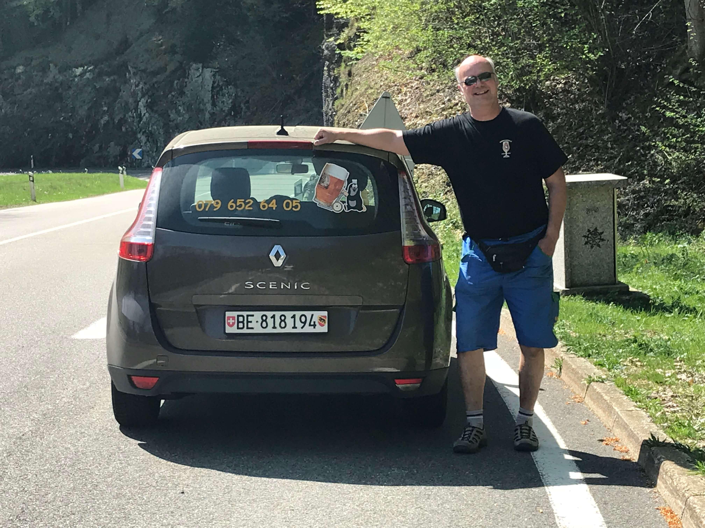
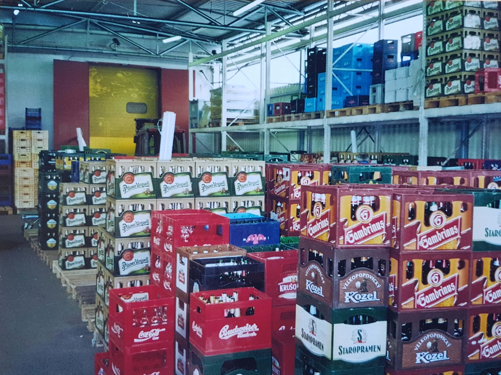
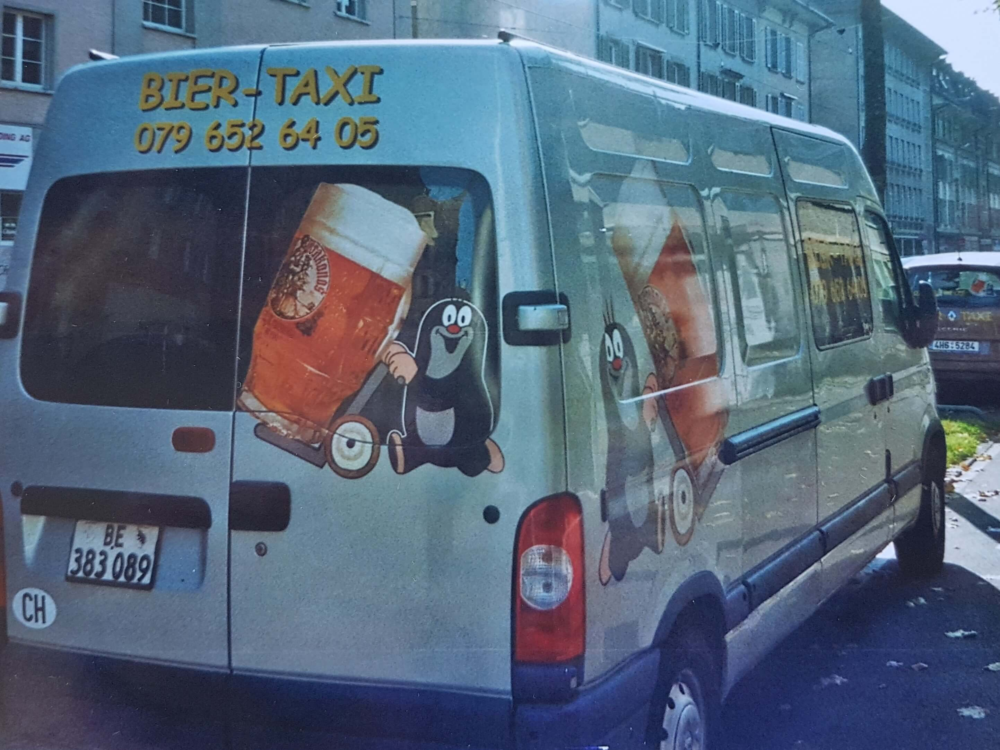
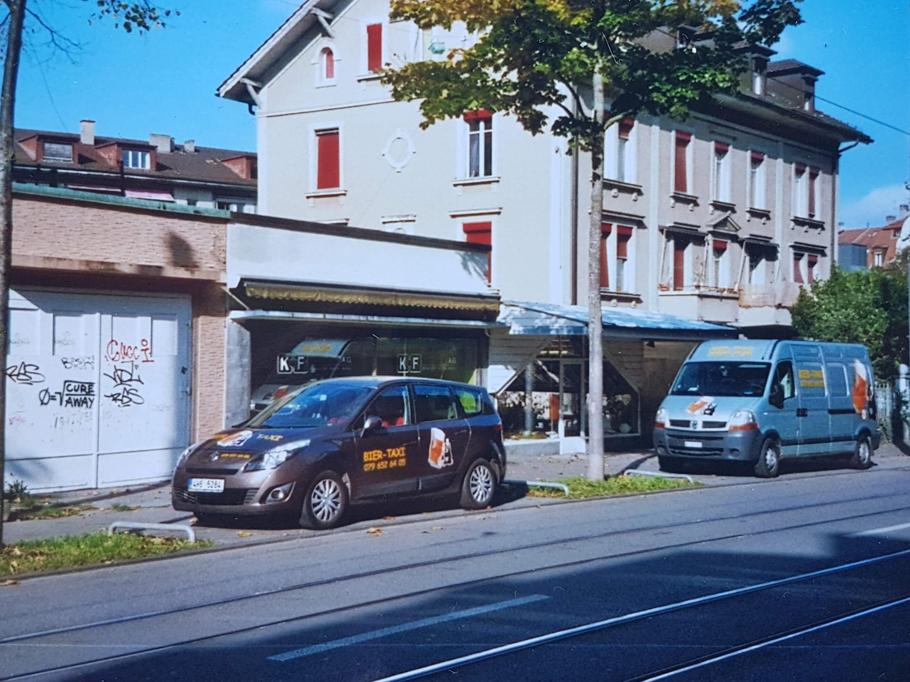

Česká piva ve Švýcarsku
Vážení krajané ( Česi, Slováci a Čechoslováci )

Objednávky a dodávky - Biertaxi
Máte – li rádi Česká piva, tak jsme pro Vás ve Švýcarsku zařídili distribuci a prodej Českých piv a i jiných nápojů. Již po dlouhá léta fungujeme v kantonu Bernu a nyni téže v Zurichu a okolí. Kontaktujte nás prosím na číslo 079 / 652 64 05 , pánové Miroslav Wopelka a Michael Wigger s Vámi rádi proberou co a jak. Děkujeme.

PO. – PÁ. 8:00 – 19:00 / SO. 9:00 – 17:00




